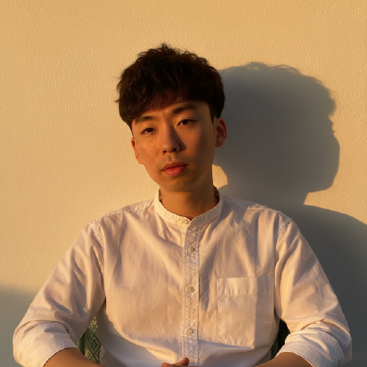

Fachinformatiker
Anwendungsentwicklung
Sehr geehrte Damen und Herren,
im Rahmen meiner laufenden Umschulung zum Fachinformatiker für Anwendungsentwicklung (GFN Essen) suche ich ein geeignetes Praktikum. Mein Ziel ist es, ab April 2026 meine bisher erworbenen Kenntnisse in einem professionellen Entwicklungsteam praxisnah einzusetzen und meine berufliche Neuorientierung in der IT aktiv voranzutreiben.
Meine berufliche Laufbahn begann in Bereichen außerhalb der IT-Branche. Dennoch habe ich früh den Wunsch entwickelt, die technologische Entwicklung nicht nur zu beobachten, sondern als Entwickler selbst aktiv mitzugestalten. Aus diesem Grund habe ich mir autodidaktisch Python beigebracht und erste kleine Webanwendungen programmiert. Dieses eigenständige Lernen hat meine Leidenschaft für die Softwareentwicklung nachhaltig gefestigt.
Um mein Wissen systematisch zu professionalisieren, habe ich mich für die Umschulung entschieden. Parallel dazu studiere ich Informatik im Fernstudium an der Korea National Open University. Diese Kombination aus theoretischem Studium, praxisorientierter Umschulung und eigenständigem Lernen gibt mir die Fähigkeit, mich sehr schnell in neue Themengebiete einzuarbeiten.
Besonderes Interesse habe ich an der Backend-Entwicklung und modernen Webtechnologien. Ich bringe fundierte Kenntnisse in Python, Java, HTML, CSS und JavaScript mit und beschäftige mich intensiv mit Frameworks wie Django und Flask. Mein Anspruch ist es stets, sauberen, gut strukturierten und wartbaren Code zu schreiben.
Ich bin überzeugt, dass ein Praktikum die ideale Gelegenheit bietet, mein theoretisches Wissen in reale Entwicklungsprozesse zu übertragen. Durch meine bisherige Berufserfahrung – unter anderem als Restaurantmanager – bringe ich zudem ein hohes Maß an Eigenverantwortung, Stressresistenz und Teamfähigkeit mit. Ich freue mich darauf, durch den Austausch mit erfahrenen Entwicklern zu wachsen und zugleich eigene Ideen in Ihr Team einzubringen.
Über die Möglichkeit, meine Motivation und meine Fähigkeiten in einem persönlichen Gespräch näher vorzustellen, freue ich mich sehr.
Mit freundlichen Grüßen
Myeonggyun Park